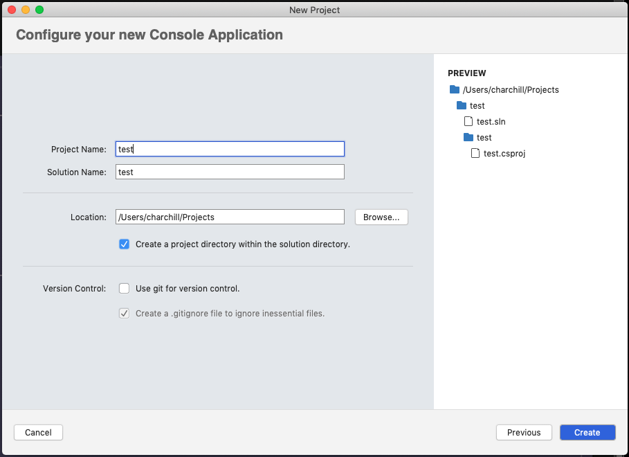

Create console app using visual studio, dot net framework and c# on OSX/MAC
Instructions :
- 1- Open Visual Studio to get to the landing page and click on + New
-

- 2- Choose Console Application web and console & with C#
-

- 3- Select .NET 5.0 as target framework
-

- 4- Give your project a name, choose your preferred project folder location, and press create
- 
- 5- A test app will be generated for you containing "Hello World", Press F5 or Command + F5 or press the play button from top toolbar to build and run the app. A terminal will be opened with the app running.
-

×